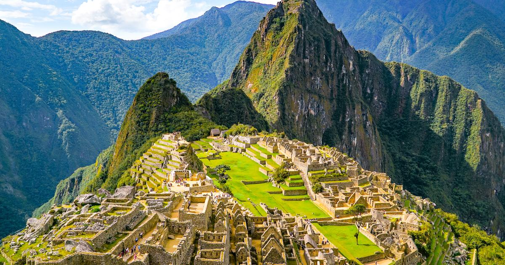

Machu Pichu
A unos 80 kilómetros de la ciudad peruana de Cuzco, en la cima de una montaña, se encuentra el extraordinario santuario histórico de Machu Picchu. Ubicado a 2,453 metros sobre el nivel del mar y rodeado por un majestuoso paisaje montañoso, este sitio alguna vez fue un importante palacio y santuario religioso para los incas, el mayor imperio de la América precolombina.
Por sus características y peculiar ubicación, Machu Picchu es considerada una obra maestra de la ingeniería y de la arquitectura, con una rica historia que abarca más de siete siglos. Aquí te presentamos su evolución, desde sus comienzos como asentamiento inca hasta el origen de su popularidad actual.
